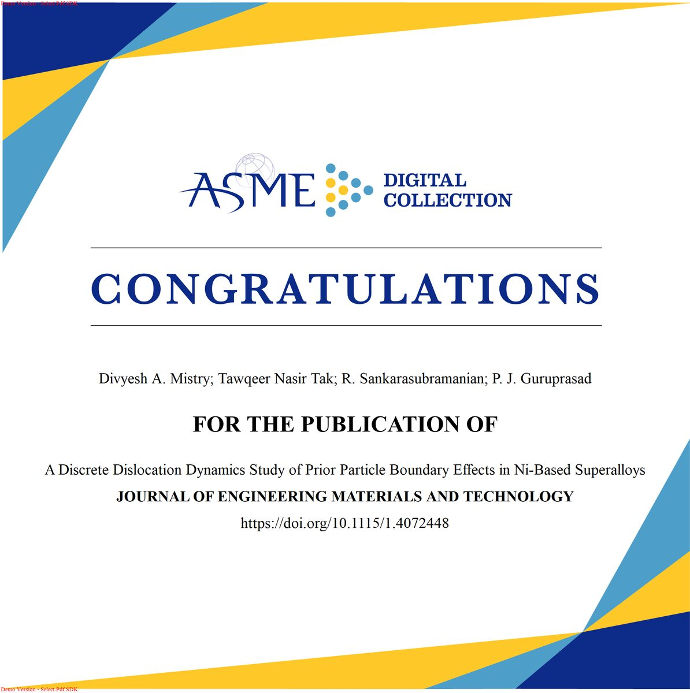

2026
Journal article · First author
A Discrete Dislocation Dynamics Study of Prior Particle Boundary Effects in Ni-Based Superalloys
Divyesh A. Mistry, Tawqeer Nasir Tak, R. Sankarasubramanian, and P. J. Guruprasad.
Journal of Engineering Materials and Technology 148(4), Article 041013 (2026). DOI: 10.1115/1.4072448.
A two-dimensional polycrystalline discrete dislocation dynamics (DDD) model quantifies how prior particle boundary clusters influence dislocation blocking, hardening, and residual stress during loading, unloading, and annealing.
BibTeX citation
@article{Mistry2026PPB,
author = {Mistry, Divyesh A. and Tak, Tawqeer Nasir and
Sankarasubramanian, R. and Guruprasad, P. J.},
title = {A Discrete Dislocation Dynamics Study of Prior Particle
Boundary Effects in {Ni}-Based Superalloys},
journal = {Journal of Engineering Materials and Technology},
year = {2026}, volume = {148}, number = {4}, pages = {041013},
doi = {10.1115/1.4072448}
}ASME publication certificate
